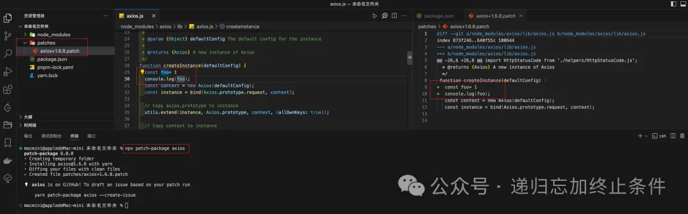

对第三方包进行修改以适应特定需求是一个常见的场景。尽管直接修改 node_modules 中的代码是可能的，但这种做法并不推荐，因为这些改动在下次运行 npm install 或更新包时会丢失。
接下来的内容中，我们将来讲解一下处理这种情况的几种推荐方法。
使用 Fork
最常见的方法就是 Fork 源代码，通过在 GitHub 上或其他托管平台上 Fork 第三方包的源代码库。对其源代码进行修改，修改完成后将修改后的包发布到 npm 上。如果你不希望它是公开的，那么你可以搭建一个 npm 的私有包。直接将项目中的包切换我们自己发布的包。
提交 PR
如果你认为你的修改对其他用户也有帮助，可以向原始包的维护者提交 Pull Request（PR）。如果 PR 被接受并合并，那么你就可以直接使用未来版本的官方包，而不需要维护一个 Fork。
本地修改与补丁
本地修改与补丁方法允许我们对 node_modules 中的包进行必要的修改，同时通过补丁文件的形式保存这些修改。这种方式既可以避免直接修改 node_modules 目录下的代码，也确保了项目的其他成员或在其他环境中部署时能够应用同样的修改。具体步骤如下：
- 在本地对包进行修改：直接在项目的 node_modules 目录下找到并修改对应的第三方包文件。虽然这种修改是临时的，但是接下来的步骤会帮助我们保存这些改动。
- 创建补丁文件：一旦完成了必要的修改，你可以使用 git diff 或其他差异比较工具来生成一个补丁文件。这个文件记录了修改的内容。如果你的项目使用 Git 进行版本控制，可以先提交所有其他更改，以便 git diff 只显示对第三方包的修改。
git diff > patches/third-party-package.patch
- 应用补丁：为了自动化地在每次安装依赖时应用这个补丁，你可以使用如
patch-package这样的工具。patch-package允许在 node_modules 中的包上应用补丁，并且这些补丁可以和你的项目代码一起被版本控制。
首先，安装 patch-package：
npm install patch-package postinstall-postinstall --save-dev
然后，将应用补丁的步骤添加到 package.json 中的 scripts 字段：
{
"scripts": {
"postinstall": "patch-package"
}
}
这样，每次运行 npm install 时，postinstall 脚本都会执行，自动应用保存在 patches/目录下的所有补丁。
假设我们要要修改 axios 包，那么我们可以直接在项目的 node_modules/axios 目录下对 axios 进行必要的修改。这些修改可以是任何东西，从简单的配置更改到函数逻辑的更新。
生成补丁
使用 patch-package 生成一个补丁文件。这个命令会比较你对 node_modules 中 axios 的修改，并将这些修改保存为一个补丁文件。
npx patch-package axios
执行这个命令后，patch-package 会在项目的根目录下创建一个 patches 目录（如果还没有的话），并在里面生成一个名为 axios+版本号.patch 的文件，其中版本号是你项目中使用的 axios 的版本。
为了验证补丁是否会被正确应用，你可以尝试删除 node_modules 目录并重新安装依赖：
rm -rf node_modules
npm install
在 npm install 执行完成后，patch-package 会自动运行并应用你之前创建的补丁，将你对 axios 的修改重新应用到新安装的 axios 包上。
这样，你就完成了对 axios 的修改，以及配置项目自动应用这些修改的整个流程。
最终的结果如下图所示：

包装第三方包
包装第三方包方法涉及创建一个新的模块（或包），专门用来封装第三方包。通过这种方式，你可以在不直接修改原始包的情况下，添加新的功能、修改现有方法或者调整方法的行为。
创建一个新的文件（如 third-party-wrapper.js），在这个文件中导入第三方包，并实现需要修改或扩展的功能。
// third-party-wrapper.js
import { foo } from "axios";
// 修改或扩展someFunction的行为
export function enhancedSomeFunction() {
// 在调用原始函数之前执行一些操作
console.log("你好");
// 调用原始函数
let result = foo.apply(this, arguments);
// 在调用原始函数之后执行一些操作
console.log("小黑子");
// 返回结果
return result;
}
在项目中的其他部分，你可以直接引入并使用这个封装模块，而不是直接使用第三方包。这样，你就可以利用修改后的功能，同时避免了对第三方包的直接修改。
import { enhancedSomeFunction } from "./third-party-wrapper";
enhancedSomeFunction();
这种方法的好处是，它提供了一个清晰的隔离层，使得第三方包的任何更新不会直接影响到你对功能的定制。同时，这也使得维护和升级第三方包变得更加容易，因为你只需要在封装层中做出相应的调整。
总结
通过上面这四种方法，我们应该对这个场景有比较熟悉的理解了，选择哪种方法取决于你的具体需求、对第三方包的修改程度以及是否希望将这些修改贡献给社区。通常，提交 PR 和使用 Fork 是首选方法，因为它们可以避免维护自定义修改所带来的长期负担。